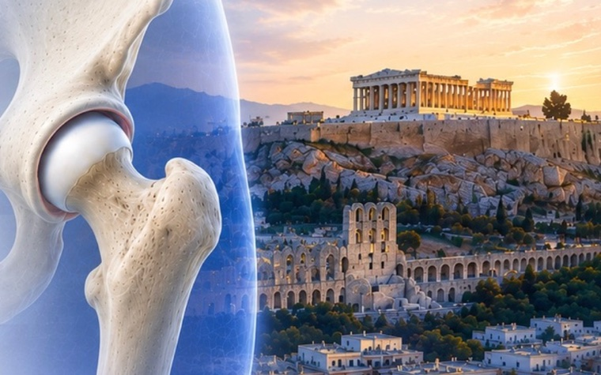
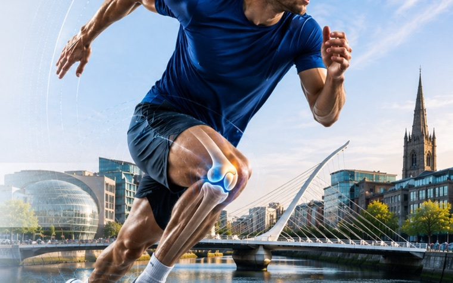
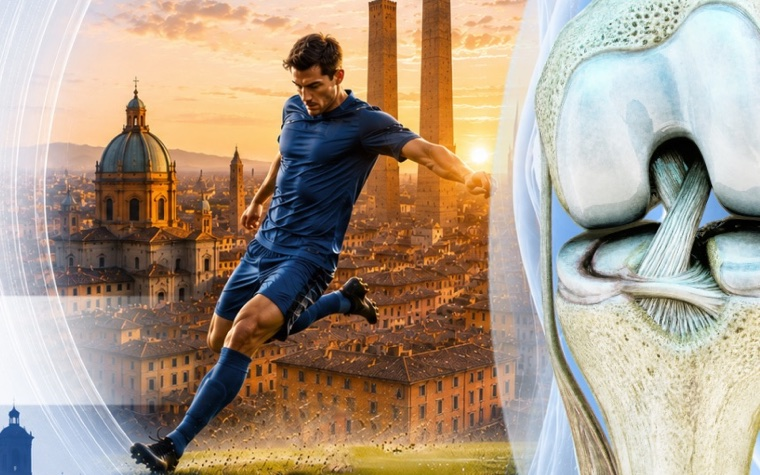
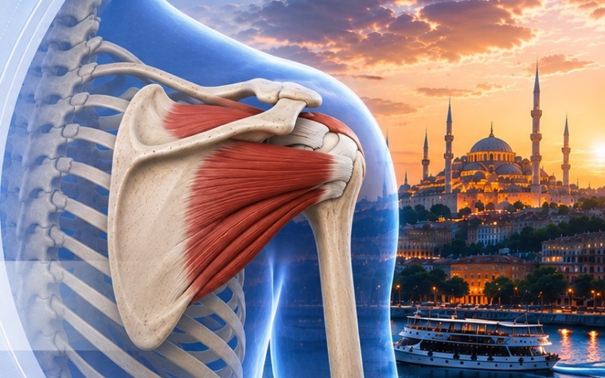
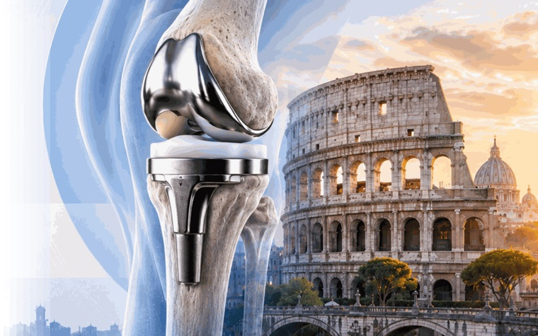
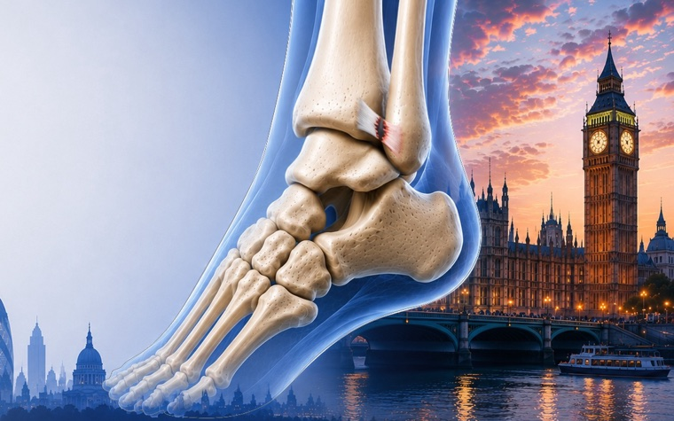

The 2027 focus meetings
In date order. Each meeting has its own website, with the programme, venue and registration details as they are confirmed.
-

15–16 April2027 Hip Athens, Greece Hip Injuries in Athletes From FAI to DDH — the Olympic path to joint preservation NJV Athens Plaza Visit the site -

6–7 May2027 Sports Knee Dublin, Ireland Mastering Primary ACL Reconstruction Getting it right first time: laxity, graft choice and rehabilitation Venue to be announced Visit the site -

June2027 Sports Medicine Bologna, Italy Return to Performance after ACL Reconstruction In football players Venue to be announced Visit the site -

September2027 Shoulder Istanbul, Turkey Massive Irreparable Rotator Cuff Tears The options when repair is no longer on the table Venue to be announced Visit the site -

8–9 October2027 Arthroplasty & Degenerative Knee Rome, Italy Revision Knee Arthroplasty and Periprosthetic Joint Infection Current concepts and future directions NH Roma Villa Carpegna Visit the site -

29 October2027 Foot and Ankle London, United Kingdom From Mechanism to Match Fitness Managing syndesmosis injuries in athletes Venue to be announced Visit the site
Dates and venues shown as “to be announced” will be confirmed by ESSKA and published on each meeting’s own website.